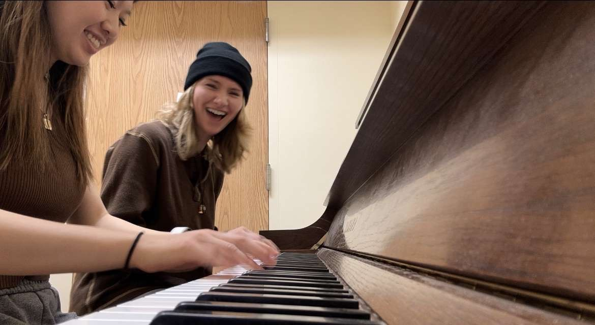

I have known Iris for over 3 years, but we started to become very close friends during our senior year of high school. We ran on the same cross country team, so we were kind of forced to be around each other all the time. Which I am of course grateful for. Iris is someone I can go to for whatever mood I'm in. I can count on her to help me whenver I am in need, but I can also expect her to make every experience a fun one. She is my favorite person and I am so glad to have her in my life.

Running
I started running as a sport my sophomore year of high school. At the time, soccer was my main sport and I only joined the cross country team to stay in shape for the soccer season. However, I had no idea how much I would've ended up loving the sport. I loved it so much so that I quit soccer and took up running full time.
This descision has led me to opprotunity of running in college! Although both the cross country and track seasons have been very taxing, I have enjoyed my time running at Madonna so far.
My Pets
These are my pets!
First we have my dog Shirl. I have had her since I was in the third grade and she is currently 11 years old. Shirl has a very sassy personality. She makes lots of facial expressions that make it so she never hides her true emotions. She loves my mom more than anyone and will do anything to be at her side.
My other pet is my Lizard named Chip. She is a bearded dragon and is currently 10 years old, which is pretty elderly for lizard. She has a very relaxed personality and is always ready to hangout.